Backlog.md を GitHub Codespaces で動かす
「ソースコードを fork し、ブラウザだけで Backlog.md をソースのまま起動する」
1題材：Backlog.md について
Backlog.md は、タスクを Markdown ファイルとしてリポジトリ内に置き、CLI・ターミナルのかんばん・Web UI で管理する OSS（TypeScript / Bun 製、MIT ライセンス）。ハンズオンではこのソースコードを題材に、Claude Code で読み解き・改良する。
Backlog.md とは — 何がうれしいのか
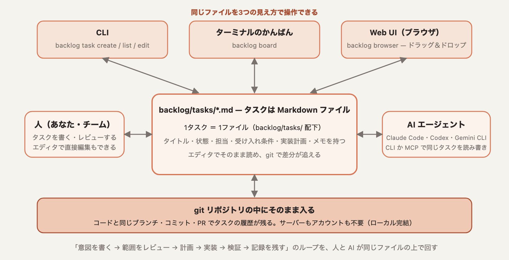
- タスクがコードと同じ場所にある：1タスク＝1つの Markdown ファイル（
backlog/tasks/）。ブランチ・コミット・PR と一緒に履歴が残り、レビューもできる。Jira や Trello のような外部サービスとの往復が要らない - 人と AI エージェントが同じタスクを見る：人は CLI・かんばん・Web UI・エディタで、Claude Code などのエージェントは CLI か MCP で、同じファイルを読み書きする。「Claude に頼んだ作業が今どこまで進んだか」がかんばんに出る
- 「どうなれば完了か」を先に書く：各タスクに受け入れ条件（Acceptance Criteria）と Definition of Done を持たせ、エージェントは実装計画（Implementation Plan）をタスクに書いてから実装する。人は着手前と完了後にその内容をレビューする、というスペック駆動の流れが型になっている
- 導入が軽い：サーバーもアカウントも不要で、
backlog initだけで始められる。テレメトリも無い - ハンズオンの題材として：TypeScript 製で規模が手頃（CLI・コア・Web UI の層分けが明快）。しかも Backlog.md 自身が Backlog.md でタスク管理されているので、OSS の開発プロセスをそのまま覗ける
この資料では、ローカル PC では起動せずに、GitHub Codespaces 上で Backlog.md をソースコードのまま起動するまでの手順を、画面キャプチャつきで説明する。devcontainer の設定は不要で、Codespaces の既定イメージに Bun を手動で入れる最小構成とする。
前提
- GitHub アカウント（個人アカウントには Codespaces の無料枠がある。上限は GitHub の料金ページを参照）
- ブラウザ（Chrome / Edge / Safari など）。VS Code のインストールは不要
- fork 元のリポジトリ：講師が用意したハンズオン用フォーク
cl-y-arai/Backlog.md-handson（上流のMrLesk/Backlog.mdを直接 fork しない）
Bun.serve などの Bun 固有 API を使っているため、Node.js では起動できない。Codespaces の既定イメージには Node.js は入っているが Bun は入っていないので、手順4 で bun コマンドをインストールする。
2手順1：リポジトリを fork する
自分のアカウントにコピー（fork）を作り、以降の変更はすべて自分の fork 上で行う。fork 元の cl-y-arai/Backlog.md-handson を GitHub で開き、右上の Fork ボタンを押す。
cl-y-arai/Backlog.md-handson を fork する。上流の MrLesk/Backlog.md を直接 fork すると、あとで gh repo clone が設定する upstream と、gh pr create が提案する PR の宛先が本家の OSS になってしまう。
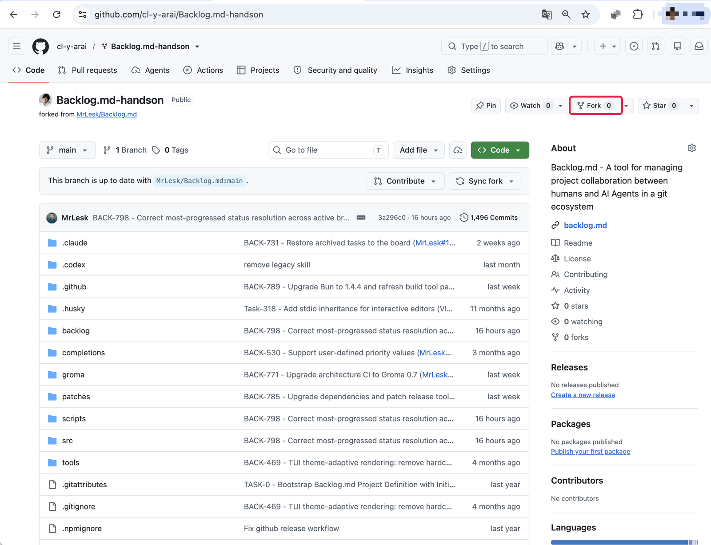
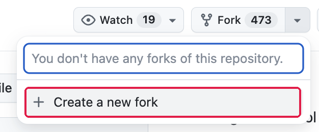
作成画面では Repository name は既定のまま（Backlog.md-handson）、Copy the main branch only もチェックしたまま Create fork を押す。
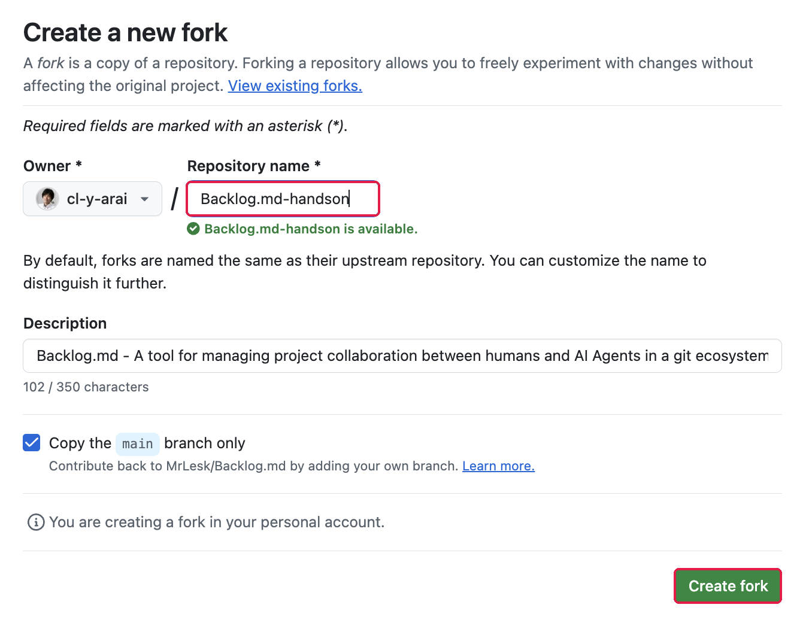
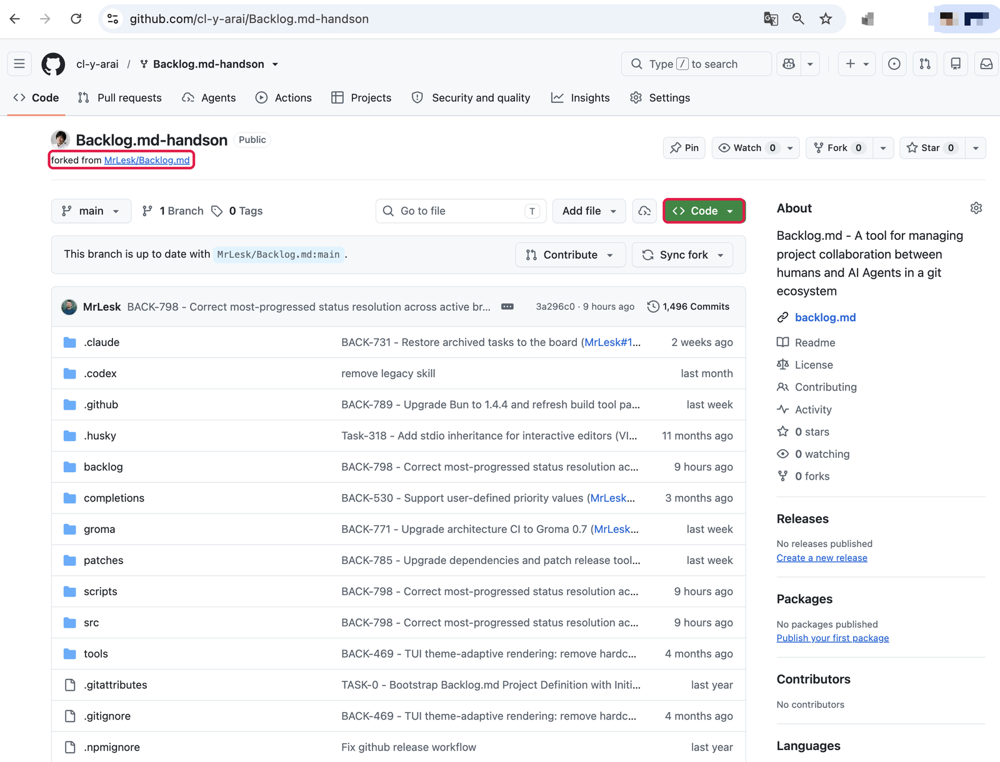
3手順2：Codespace を作成する
fork したリポジトリのページで緑の Code ボタンを押し、Codespaces タブに切り替える。
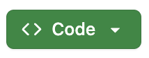
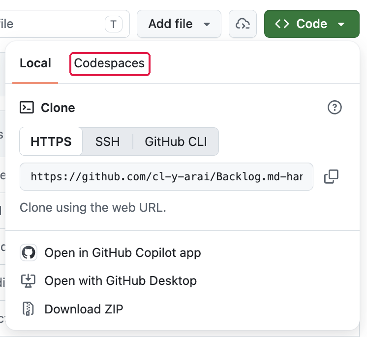
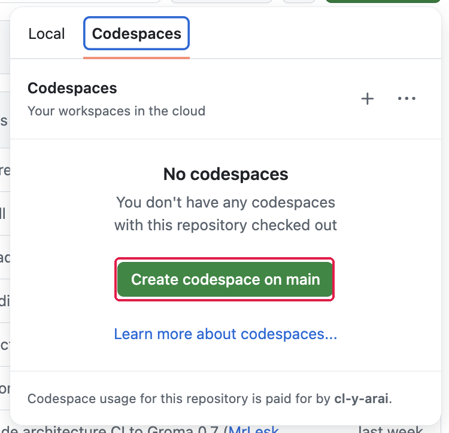
4手順3：初期化を待つ
VS Code が開くと、最初に「このフォルダー内のファイルの作成者を信頼しますか?」と聞かれる。ターミナルを使うために フォルダーを信頼して続行 を押す。
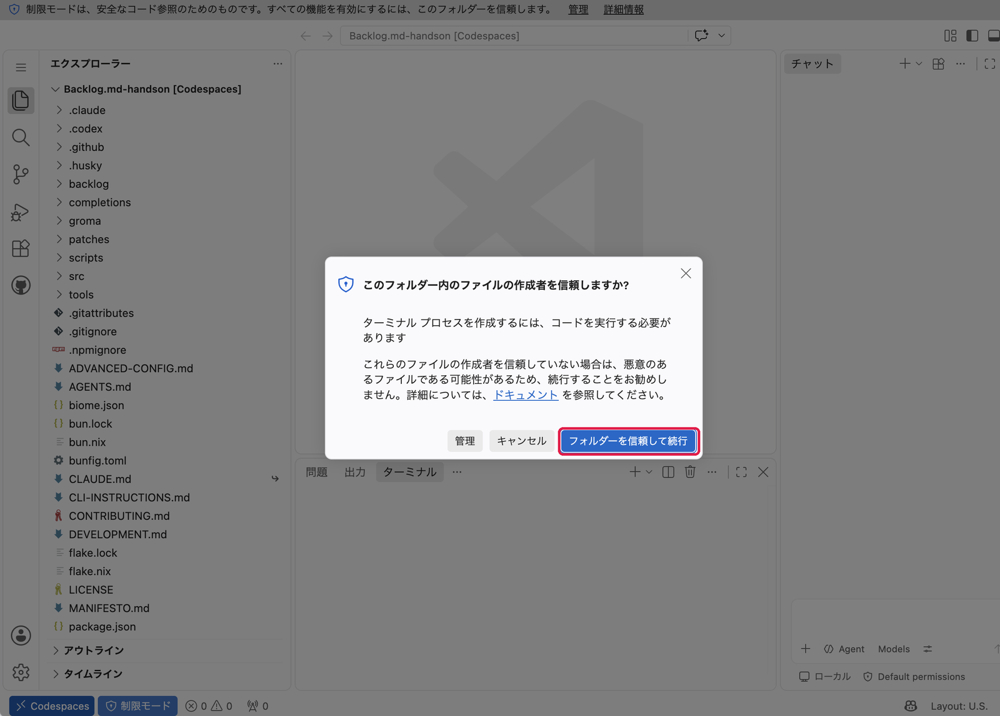
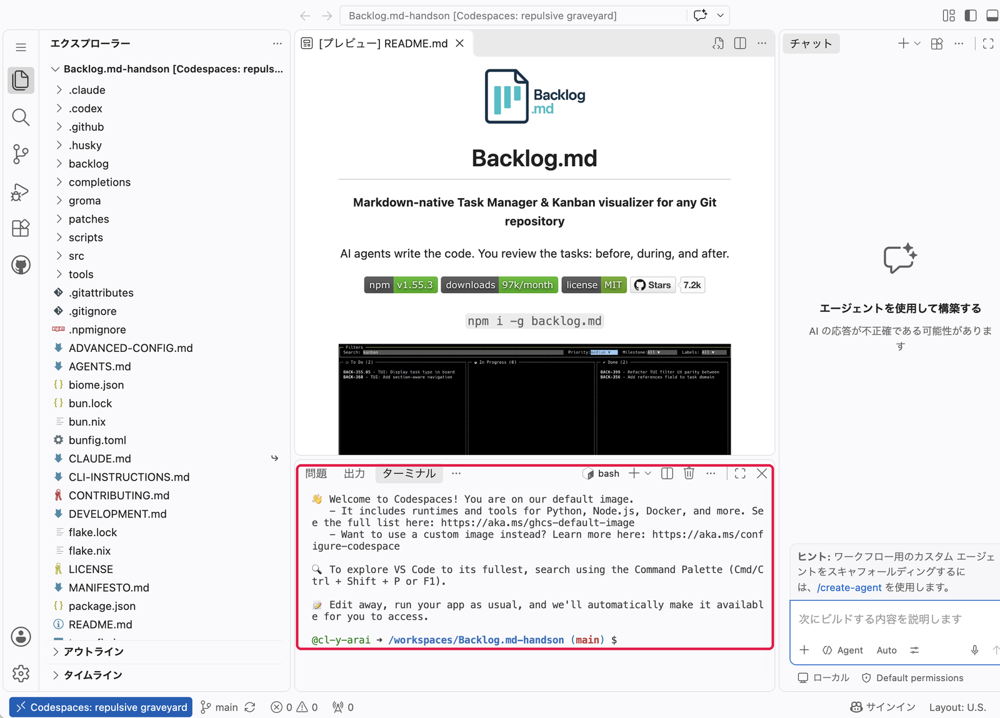
ターミナルには作成ログが流れる。既定イメージは package.json を見つけると自動で npm install を走らせるので、終わるまで待つ（1〜2分）。
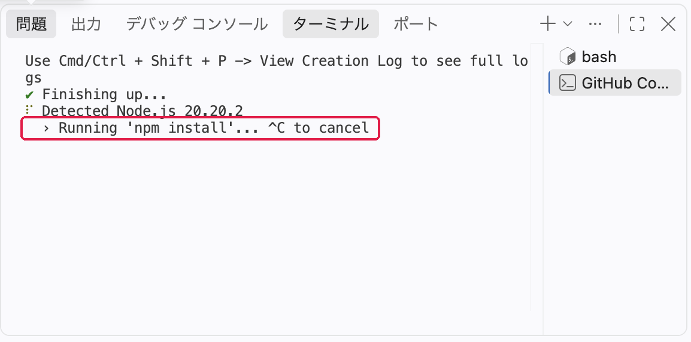
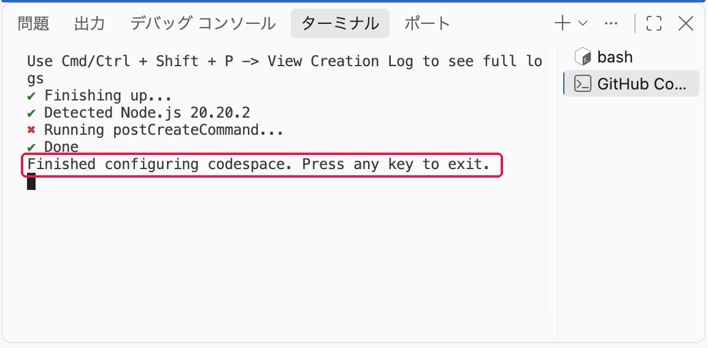
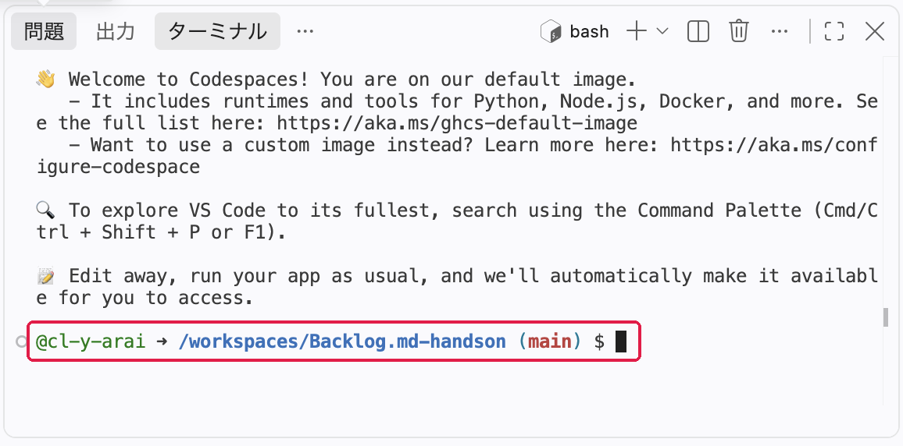
/workspaces/<リポジトリ名>（clone 済み）5手順4：Bun を入れてソースから起動する
ターミナルで次の4つを順に実行する。
$ curl -fsSL https://bun.sh/install | bash $ export PATH="$HOME/.bun/bin:$PATH" $ bun install $ bun run cli browser --no-open
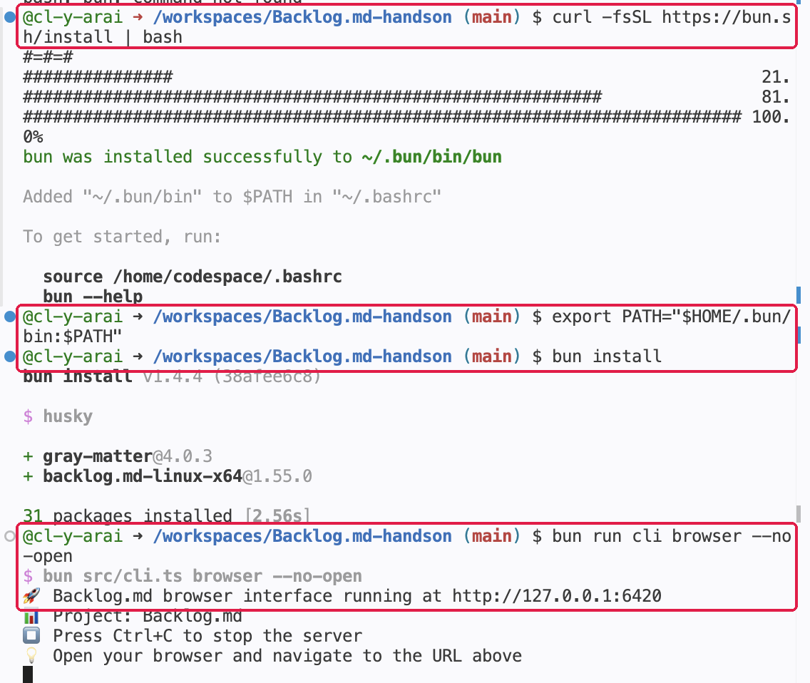
| コマンド | やっていること |
|---|---|
curl -fsSL https://bun.sh/install | bash | Bun を ~/.bun/bin に入れる。数十秒で終わる。~/.bashrc にも PATH が追記される |
export PATH="$HOME/.bun/bin:$PATH" | いま開いているターミナルで bun を使えるようにする。新しいターミナルを開く場合は不要 |
bun install | 依存パッケージを取得する（数秒）。husky が git の pre-commit フックを設定し、配布版バイナリ backlog.md-linux-x64 も入るが、ソース実行には使わない |
bun run cli browser --no-open | bun src/cli.ts browser --no-open の短縮形。ソースコードをそのまま実行して Web UI を 6420 番ポートで起動する。--no-open はコンテナ内でブラウザを開こうとしないための指定 |
6手順5：Web UI をブラウザで開く
サーバーはコンテナ内の 127.0.0.1:6420 で待ち受けている。Codespaces がこのポートを自動で検出し、ポート タブに転送先 URL が現れる。
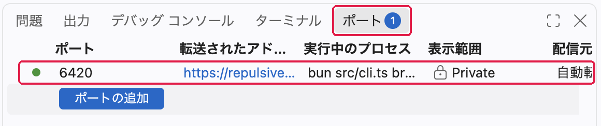
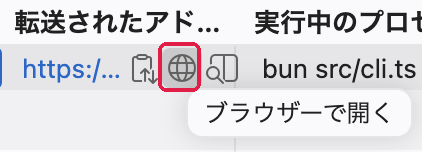
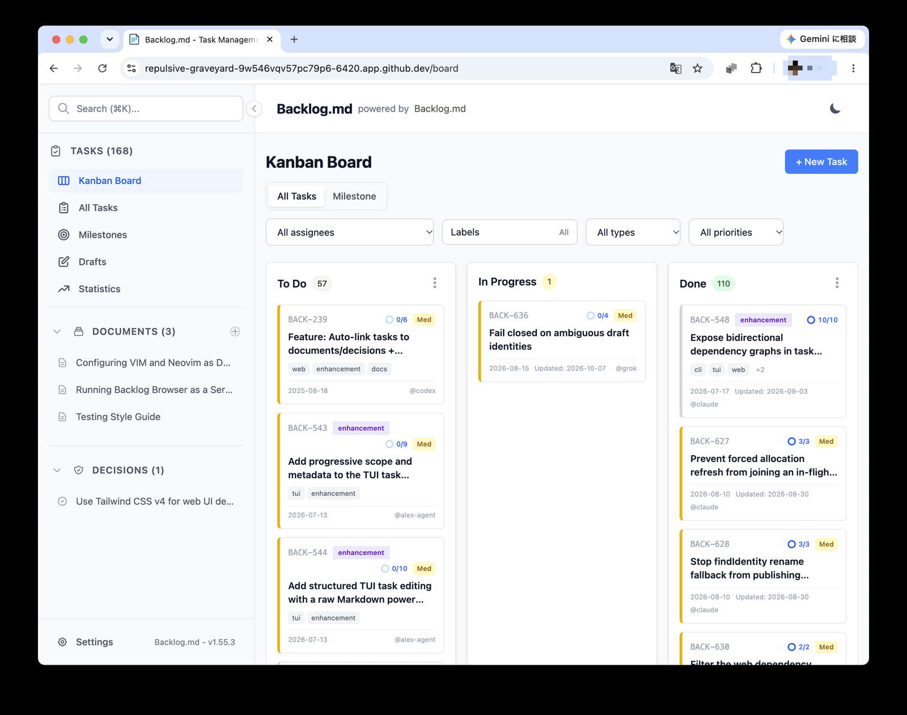
https://<codespace名>-6420.app.github.dev/ の形。表示されているタスクは Backlog.md プロジェクト自身の開発タスク- ポートタブに 6420 が出ないときは、ポートの追加 で 6420 を手動で追加する
- URL を開いて GitHub のログインを求められたら、Codespace を作ったアカウントでログインする（Private のため本人しか開けない）
- サーバーを止めるときは、ターミナルで Ctrl+C
7発展：develop へのマージで自動反映（CI/CD）
ここまでは、ソースを変えるたびに Codespace のターミナルでサーバーを止めて起動し直していた。この章では develop ブランチにマージされたら、GitHub Actions がビルドとチェックを行い（CI）、通ったコミットだけを Codespace が自動で取り込んで bun install と Web UI の再起動まで行う（CD） 仕組みを作る。Codespace 側で使うのは、bun --watch（ソースが変わったらサーバーを自動で再起動する Bun の機能）と、1行の git pull ループだけ。
仕組み
| # | どこで | 何が起きるか |
|---|---|---|
| ① | GitHub | PR を develop にマージする（＝ develop に push される） |
| ② | GitHub Actions（CI） | bun install → 型チェック → Biome → CLI の起動確認。どれかが失敗したらここで止まる |
| ③ | GitHub Actions | CI が通ったコミットを ci-passed ブランチに進める（「デプロイしてよいコミット」の目印） |
| ④ | Codespace（CD） | ループが30秒ごとに ci-passed を git pull → bun install。ソースが変わると bun --watch が Web UI サーバーを自動で再起動する |
| ⑤ | ブラウザ | Web UI のタブを再読み込み（F5）すると新しいコードの画面になる |
gh codespace ssh と codespace 権限つきの個人アクセストークン（PAT）が要り、Codespace が停止中だと失敗する。ここでは Codespace 側から GitHub を見に行く pull 型 にして、トークンの追加発行なしで済ませる。Codespace が受け取るのは CI を通ったコミットだけなので、壊れたコードで Web UI が落ちることもない。
7-1. develop ブランチを作る
ローカルの clone（Section 2 で gh repo clone した自分の fork。まだなら gh repo clone <自分のアカウント>/Backlog.md-handson）で、main から develop を作って push する。
$ git switch main && git pull $ git switch -c develop $ git push -u origin develop
7-2. fork の GitHub Actions を有効にする
fork したリポジトリでは Actions が既定で止まっている。自分の fork の Actions タブを開き、I understand my workflows, go ahead and enable them を押す。
.github/workflows/ci.yml（main への push と全 PR で、Linux / macOS / Windows のテストを実行）がある。有効化すると develop 宛ての PR でもこれが走り、数分〜十数分かかる。この章の自動反映は次に作る develop-cicd.yml だけで動くので、既存 CI の完了を待つ必要はない。
7-3. ワークフローを追加する
ローカルの Claude Code にワークフローのファイルを作らせ、develop に push する。
develop ブランチへの push で動く GitHub Actions のワークフロー .github/workflows/develop-cicd.yml を作って。ci ジョブで bun install --frozen-lockfile、bun run check:types、bun run check、bun src/cli.ts --version を実行し、成功したら promote ジョブでそのコミットを ci-passed ブランチに force push して。作ったら develop にコミットして push して。
出来上がりの例は次のとおり（Claude Code の出力がこれと違っても、同じ動きになっていればよい）。
# .github/workflows/develop-cicd.yml
name: develop CI/CD
on:
push:
branches: [develop]
concurrency:
group: develop-cicd
cancel-in-progress: true
jobs:
ci:
name: build-and-check
runs-on: ubuntu-latest
permissions:
contents: read
steps:
- uses: actions/checkout@v7.0.1
- uses: oven-sh/setup-bun@v2
with:
bun-version: 1.4.4
- run: bun install --frozen-lockfile
- run: bun run check:types
- run: bun run check
- run: bun src/cli.ts --version
promote:
name: promote-to-ci-passed
needs: ci
runs-on: ubuntu-latest
permissions:
contents: write
steps:
- uses: actions/checkout@v7.0.1
- run: git push --force origin HEAD:refs/heads/ci-passed
push したら自分の fork の Actions タブを開き、develop CI/CD の2つのジョブ（build-and-check → promote-to-ci-passed）が緑になることを確認する。ブランチ一覧に ci-passed が現れれば準備完了。
7-4. Codespace で自動反映を始める
Codespace のターミナルで、手順4 で起動したサーバーを Ctrl+C で止める。次に develop に切り替え、Web UI を bun --watch 付きで起動し直す。
$ git fetch origin $ git switch develop $ bun --watch src/cli.ts browser --no-open
ターミナルの＋ボタンで2つ目のターミナルを開き、CI を通ったコミットを取り込み続けるループを動かす。
$ while sleep 30; do git pull -q --ff-only origin ci-passed && bun install; done
| コマンド | やっていること |
|---|---|
bun --watch src/cli.ts browser --no-open | 手順4 の bun run cli browser --no-open と同じ起動に --watch を付けたもの。読み込んでいるソース（Web 画面のファイルも含む）が変わると、Bun がプロセスごと再起動する。ポート 6420 は変わらないので、6章で開いたタブはそのまま使える |
while sleep 30; do … done | 30秒ごとに ci-passed を早送りで pull し、続けて bun install で依存をそろえる。新しいコミットが無ければ何も変わらない |
止めるときは、それぞれのターミナルで Ctrl+C を押す。
7-5. 動作確認：PR をマージして自動反映させる
- ローカルで
developから作業ブランチを切り、Claude Code に Web UI で目に見える小さな変更（例：画面の見出しの文言を変える）をさせてコミット・push する develop宛ての PR を作ってマージする。fork では PR の宛先が fork 元にならないよう、リポジトリを明示するgh pr create --repo <自分のアカウント>/Backlog.md-handson --base develop --fillgh pr merge --repo <自分のアカウント>/Backlog.md-handson --merge- Actions の develop CI/CD が緑になるのを待つ（1〜2分）
- 30秒以内に、2つ目のターミナルに
bun installの出力が出て、1つ目のターミナルでサーバーが再起動する（「running at http://127.0.0.1:6420」がもう一度出る） - Web UI のタブを再読み込み（F5）すると、変更が反映されている
8よく使うコマンド
すべてリポジトリのルート（/workspaces/<リポジトリ名>）で実行する。bun run cli の後ろに書いた引数は、そのまま src/cli.ts に渡る。
| 目的 | コマンド |
|---|---|
| バージョン確認 | bun run cli --version |
| タスク一覧 | bun run cli task list |
| タスク作成 | bun run cli task create "タイトル" --ac "受け入れ条件" |
| ターミナルのかんばん | bun run cli board |
| Web UI | bun run cli browser --no-open（ポートを変えるなら --port 8080） |
| 検索 | bun run cli search "キーワード" |
| 全テスト | bun run test（数分かかる） |
| テストを1ファイルだけ | bun test --timeout=10000 src/test/<ファイル>.test.ts |
| 整形・lint（Biome） | bun run check |
| 型チェック | bun run check:types |
backlog/ を操作する。リポジトリのルートで実行すると Backlog.md 自身の開発タスクが対象になる。練習用の別プロジェクトに対して使うときは --cwd <パス> を付ける（例：bun run cli task list --cwd ~/demo）。
9トラブルシューティング
| 症状 | 対処 |
|---|---|
bun: command not found | export PATH="$HOME/.bun/bin:$PATH" を実行する。または新しいターミナル（＋ボタン）を開く |
| ポートタブに 6420 が出ない | サーバーが起動しているか確認（「running at http://127.0.0.1:6420」の表示）。出ていれば「ポートの追加」で 6420 を追加する |
| URL を開くと GitHub のログイン画面や 404 になる | Codespace を作ったアカウントでログインしているか確認する。表示範囲が Private のため、他の人には開けない |
| ポート 6420 が使用中と言われる | 前回のサーバーが残っている。bun run cli browser --no-open --port 6421 のように別ポートで起動するか、pkill -f "src/cli.ts browser" で止める |
| しばらく放置したら Codespace が止まった | アイドル状態が続くと自動停止する（既定 30分）。再開すれば Bun も作業内容も残っている。消えるのはコンテナを rebuild したときだけ |
bun install で husky のエラー | git リポジトリの外で実行している。cd /workspaces/<リポジトリ名> してから実行する |
| develop に push しても Actions が動かない | fork の Actions が無効のまま。7-2 の手順で有効にする。ワークフローのファイルが develop ブランチ上の .github/workflows/ にあるかも確認する |
| promote ジョブが 403 で失敗する | fork の Settings › Actions › General の Workflow permissions を確認する。組織の設定で書き込みが禁止されている場合は「Read and write permissions」を選べないので、個人アカウントの fork で行う |
| 依存を追加する変更の反映後、Web UI がエラーで止まった | pull 直後、bun install が終わる前に bun --watch が再起動したため。1つ目のターミナルで Ctrl+C し、bun --watch src/cli.ts browser --no-open を実行し直す |
| pull ループが「Not possible to fast-forward」などのエラーを出す | Codespace 側の develop に未 push のコミットや変更がある。コードの修正はローカルで行い、Codespace では git status で確認して git reset --hard origin/develop で揃える（Codespace 上の変更は消える） |
10後片付け：Codespace の停止・削除
- 作業を中断するときは、ブラウザのタブを閉じるだけでよい（しばらくすると自動停止する）。手動で止めるなら、画面左下の Codespaces メニューから「Stop Current Codespace」
- 使い終わったら github.com/codespaces を開き、該当の Codespace の「…」から Delete する。停止中の Codespace もストレージ分の枠を消費する
- fork したリポジトリは残しておいて構わない。不要なら Settings の最下部「Delete this repository」から削除する